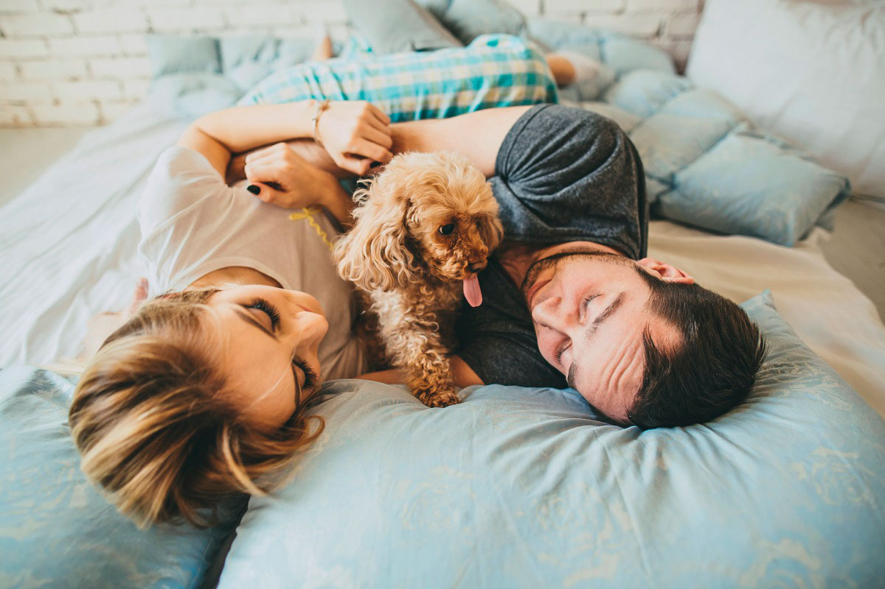
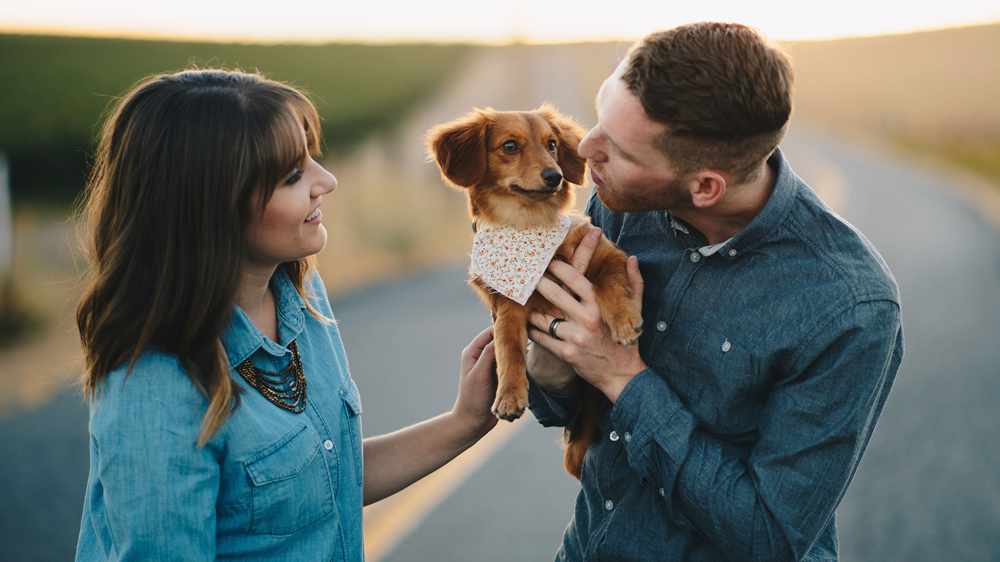
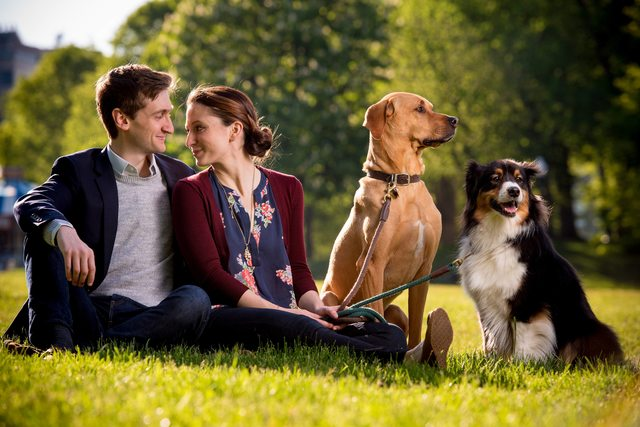
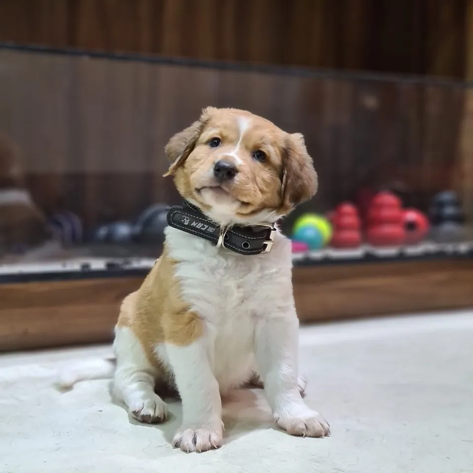
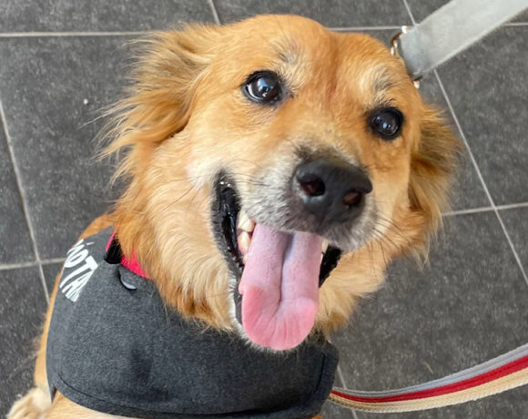
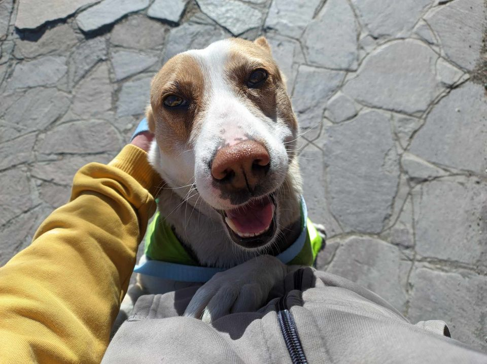
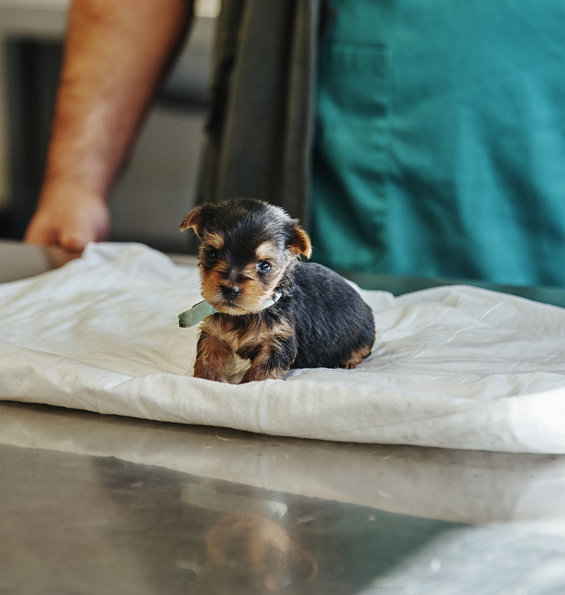

Familias felices

Samanta y Esteban con "Rulo" en brazos, agradecidos de haber conectado con su primer compañero. Festejan hoy su 2do aniversario de casados.

"Dante", el fiel compañero de Silvia y Edu; Acompañándolos en todos sus viajes juntos. "Verlo sonreír después de tanta espera fue mágico Era el compañero que buscamos desde siempre y no podríamos estar mas agradecidos".

"No se que seria de nosotros sin Timon, nos alegra todas las mañanas y nos une mas que nunca desde que vive con nosotros. Al principio pensamos que le iba a costar conectar con Betty pero parecen hermanos de toda la vida".
Los cachorros que forman parte de nuestra familia fueron rescatados de situaciones de calle o maltrato. Tratamos de darles las mejores condiciones de vida que están a nuestro alcance y siempre agradecemos una asistencia, de la manera que te sea posible.

Benny, el hermano del medio. Seguro te saca una sonrisa con su mirada curiosa.

Tommy, lamedor de narices compulsivo y el mas alegre de su camada.

Moca. Su nariz húmeda es como el primer sorbo de cafe en las mañanas.
